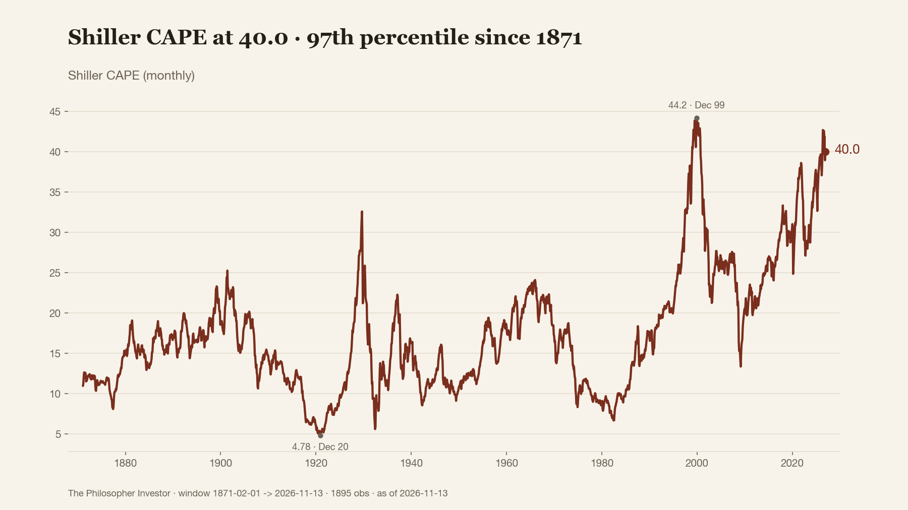
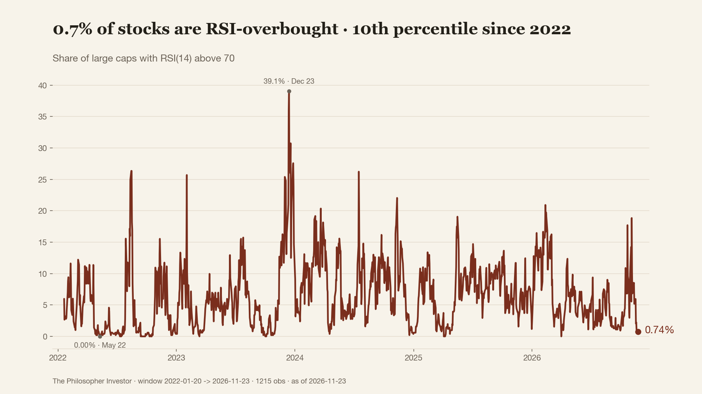
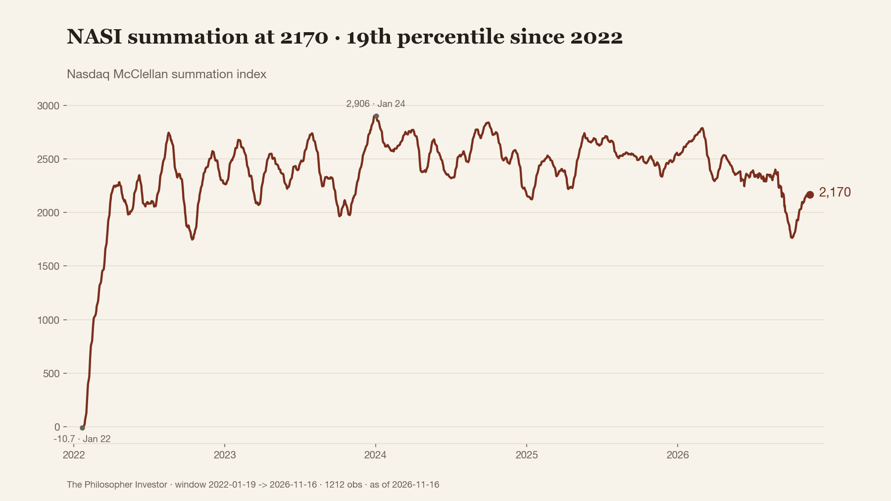

Charts of the Week
8 candidates · data through 2026-11-24
My pick: 1 + 3 + 6 + 7 + 8
6 · NASI à 2034, 10e percentile depuis 2022 : le moteur de breadth refroidit depuis le sommet du 6 octobre, SPY à -7,3 % du plus haut
8 · Bullish percent S&P 500 à 48 %, 12e percentile depuis 2023 : moins d'une action sur deux garde un signal point-and-figure haussier
7 · Put/call OCC actions à 0,95, 88e percentile depuis 2017 : les acheteurs de puts paient la protection pendant que la participation se rétrécit
1 · VVIX/VIX à 4,4, 1er percentile depuis mi-2025 : la volatilité de la volatilité est au plancher face au VIX, structure rare à décrire sans prédire
3 · CAPE de Shiller à 36,4, 95e percentile depuis 1871 : la peur de court terme se joue sur une valorisation qui reste dans le haut de l'histoire
Dropped: 2 4 5
1 ★

2

3 ★

4

5

6 ★

7 ★

8 ★
